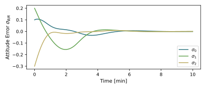
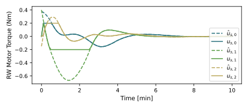
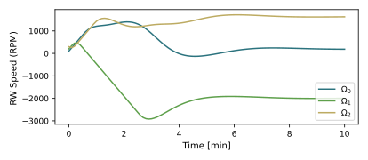

scenarioAttitudeFeedbackRW
Overview
Demonstrates how to use RWs to stabilize the tumble of a spacecraft orbiting the Earth. This script sets up a 6-DOF spacecraft which is orbiting the Earth. The goal is to illustrate how the Reaction Wheel (RW) state effector can be added to the rigid Module: spacecraft hub, and what flight algorithm module is used to control these RWs.
The first setup runs the RW control to produce a desired set of RW motor torques which are then connected directly to the RW device input states. The second setup illustrates how to setup voltage based I/O modules to the RW devices, both on the FSW and SIM side.
The script is found in the folder basilisk/examples and executed by using:
python3 scenarioAttitudeFeedbackRW.py
The simulation layout is shown in the following illustration. A single simulation process is created which contains both the spacecraft simulation modules, as well as the Flight Software (FSW) algorithm modules.

When the simulation completes several plots are shown for the MRP attitude history, the rate tracking errors, as well as the RW motor torque components, as well as the RW wheel speeds.
The fundamental simulation setup is the same as the one used in scenarioAttitudeFeedback. The dynamics simulation is setup using a Module: spacecraft module to which an Earth gravity effector is attached. The simple navigation module is still used to output the inertial attitude, angular rate, as well as position and velocity message. The simulation is setup to run in a single process again. If the flight algorithms and simulation tasks are to run at different rates, then see scenarioAttitudeFeedback2T on how to setup a 2 thread simulation.
How to Add RW Devices to the Spacecraft Simulation
For the spacecraft simulation side of this script, the new element is adding RW effectors to the
the rigid spacecraft hub. The support macro simIncludeRW.py provides several convenient tools to facilitate
this simulated RW setup process. This script allows the user to readily create RWs from a database of
public RW specifications, customize them if needed, and add them to the Module: spacecraft module.
The first task is to create a fresh instance of the RW factory class rwFactory(). This factory is able
to create a list of RW devices, and return copies that can easily be manipulated and customized if needed.
The next step in this code is to store the correct RWModel state. This can be either a balanced wheel,
a wheel with a simple jitter model, or a wheel with a fully coupled model.
The next step in this simulation setup is to use create() to include a particular RW devices.
The rwFactory class in simIncludeRW contains several
public specifications of RW devices which can be accessed by specifying the wheel name, Honeywell_HR16
in this case. The 2nd required argument is the spin axis \(\hat{\mathbf g}_B\). It is a unit
vector expressed in the \(\cal B\)-frame. The remaining arguments are all optional. In this simulation
each RW is given a different initial RW spin \(\Omega\)
in units of RPMs. The 3rd RW specifies the body-relative location of the RW center of mass. The
other two RWs use a default value which is a zero vector.
This last position vector is only used if an off-balanced RW device is being modeled.
Each RW device has several default options that can be customized if needed. For example,
the Honeywell_HR16 comes in three different momentum storage configurations. When calling the
create() command, the desired storage capacity must be specified through the maxMomentum argument.
The following table provides a comprehensive list of all the optional arguments of the create()
command. This table list the arguments, default values, as well as expected units.
Argument |
Units |
Type |
Description |
Default |
|---|---|---|---|---|
RWModel |
String |
flag indicating the RW dynamical model.
Options are |
|
|
Omega |
RPM |
Float |
initial Wheel speed |
0.0 |
maxMomentum |
Nms |
Float |
maximum RW angular momentum storage |
0.0 |
useRWfriction |
Bool |
flag to turn on RW wheel friction |
False |
|
useMinTorque |
Bool |
flag to turn on a min. RW torque |
False |
|
useMaxTorque |
Bool |
flag to turn on RW torque saturation |
True |
|
linearFrictionRatio |
Float |
Coulomb static friction value to model stickage, negative values turn off this feature |
-1 (Off) |
|
rWB_B |
m |
Float(3) |
RW center of mass location relative to B, in :math`cal B`-frame components |
[0.0, 0.0, 0.0] |
label |
String |
unique device label, must be not exceed 10 characters. If not provided, the function will auto-generate names using RWi where i is the RW wheel index starting with 1. |
RWi |
The command addToSpacecraft() adds all the created RWs to the Module: spacecraft module. The final step
is as always to add the vector of RW effectors (called rwStateEffector above) to the list of simulation
tasks. However, note that the dynamic effector should be evaluated before the Module: spacecraft module,
which is why it is being added with a higher priority than the scObject task. Generally speaking
we should have the execution order:
effectors -> dynamics -> sensors
If you want to configure or customize the RWs, the rwFactor() class is very convenient. Assume you want
to override the default value of the maximum RW speed from 6000RPM to 10,000RPM. After declaring the RW
and keeping a copy named RW1, Omega_max stage is changed using:
RW1.Omega_max = 10000.0*macros.RPM
These changes must be made before adding the RWs to the spacecraft. If the RW1 handler is not stored when the RW is create, any setup RW devices can be recalled through the device label. For example, the above modification could also be done with:
rwFactory.rwList['RW1'].Omega_max = 10000.0*macros.RPM
Flight Algorithm Changes to Control RWs
The general flight algorithm setup is the same as in the earlier simulation script. Here we use again the Module: inertial3D guidance module, the Module: attTrackingError module to evaluate the tracking error states, and the Module: mrpFeedback module to provide the desired \({\mathbf L}_r\) control torque vector. In this simulation we want the MRP attitude control module to take advantage of the RW spin information. This is achieved by adding the 2 extra lines:
mrpControl.rwParamsInMsg.subscribeTo(rwParamMsg)
mrpControl.rwSpeedsInMsg.subscribeTo(rwSpeedsMsg)
The first line specifies the RW configuration flight message name, and the second name connects the RW speed output message as an input message to this control module. This simulates the RW speed information being sensed and returned to this algorithm. This message names are not provided, then the BSK control modules automatically turn off any RW gyroscopic compensation.
Instead of directly simulating this control torque vector, new
algorithm modules are required to first map \({\mathbf L}_r\) on the set of RW motor torques
\(u_B\). This is achieved by adding the Module: rwMotorTorque module.
Note that the output vector of RW motor torques \(u_B\) is set to connect with
the RW state effector command input message. Further, this module inputs the typical
vehicle configuration message, as well as a message containing the flight algorithm
information of the RW devices. This torque mapping module can map the full 3D \({\mathbf L}_r\)
vector onto RW motor torques, or only a subset. This is specified through the controlAxes_B variable
which specifies up to 3 orthogonal axes to be controlled. In this simulation the full 3D vector is
mapped onto motor torques.
The flight algorithm needs to know how many RW devices are on the spacecraft and what their spin axis \(\hat{\mathbf g}_B\) are. This is set through a flight software message that is read in by flight algorithm modules that need this info. Two options are shown in the code how to achieve this.
First, the required flight RW configuration message can be written using
a separate support macros called fswSetupRW.py.
The a clearSetup() should be called first to clear out any pre-existing RW devices from an
earlier simulation run. Next, the script above uses the same RW information as what the simulation
uses. In this configuration we are simulating perfect RW device knowledge. If imperfect RW knowledge
is to be simulated, then the user would input the desired flight states rather than the true
simulation states. The support macro writeConfigMessage() creates the required RW flight configuration
message.
Second, the rwFactory class method getConfigMessage() can be used to extract the desired
RWArrayConfigMsgPayload message. Using this approach an exact copy is ensured between the FSW and
simulation RW configuration states, but it is less convenient in introduce differences.
Setting up an Analog RW Interface Module
The scenario illustrates how to setup a RW analog I/O module. This is illustrated in the updated flow diagram illustration.

The default interface voltage output name will connect with the default RW input message name. Naturally, these can be customized if needed. The one parameter that must be set is the voltage to torque conversion gain of the electric motor being modeled.
On the FSW side, the commanded motor torques must be directed towards a new module that converts the required torque to a commanded voltage. The first step is to re-direct the rWMotorTorque() output to not directly be the input to the RW SIM devices, but rather the input to the RW voltage command module:
Illustration of Simulation Results
show_plots = True, useJitterSimple = False, useRWVoltageIO = False
Note that in the RW motor torque plot both the required control torque \(\hat u_B\) and the true motor torque \(u_B\) are shown. This illustrates that with this maneuver the RW devices are being saturated, and the attitude still eventually stabilizes.
show_plots = True, useJitterSimple = True, useRWVoltageIO = False
Here the simple RW jitter model is engaged for each of the RWs. Change this option before the RW is created. As this is set before any of the RW created in this scenario, all the RWs have jitter engaged if this ‘useJitterSimple’ flag is set. The impact of the RW jitter is very small, naturally. The plots for this case look very similar to the balanced RW case. But there is a distinct numerical difference.
 show_plots = True, useJitterSimple = False, useRWVoltageIO = True
Here the simple RW jitter model is engaged for each of the RWs. Change this option before the RW is created. As this is set before any of the RW created in this scenario, all the RWs have jitter engaged if this ‘useJitterSimple’ flag is set. The impact of the RW jitter is very small, naturally. The plots for this case look very similar to the balanced RW case. But there is a distinct numerical difference.
- scenarioAttitudeFeedbackRW.plot_attitude_error(timeData, dataSigmaBR)[source]
Plot the attitude errors.
- scenarioAttitudeFeedbackRW.plot_rate_error(timeData, dataOmegaBR)[source]
Plot the body angular velocity rate tracking errors.
- scenarioAttitudeFeedbackRW.plot_rw_cmd_torque(timeData, dataUsReq, numRW)[source]
Plot the RW command torques.
- scenarioAttitudeFeedbackRW.plot_rw_motor_torque(timeData, dataUsReq, dataRW, numRW)[source]
Plot the RW actual motor torques.
- scenarioAttitudeFeedbackRW.plot_rw_speeds(timeData, dataOmegaRW, numRW)[source]
Plot the RW spin rates.
- scenarioAttitudeFeedbackRW.plot_rw_voltages(timeData, dataVolt, numRW)[source]
Plot the RW voltage inputs.
- scenarioAttitudeFeedbackRW.run(show_plots, useJitterSimple, useRWVoltageIO)[source]
The scenarios can be run with the followings setups parameters:
- Parameters:
show_plots (bool) – Determines if the script should display plots
useJitterSimple (bool) – Specify if the RW simple jitter model should be included
useRWVoltageIO (bool) – Specify if the RW voltage interface should be simulated.